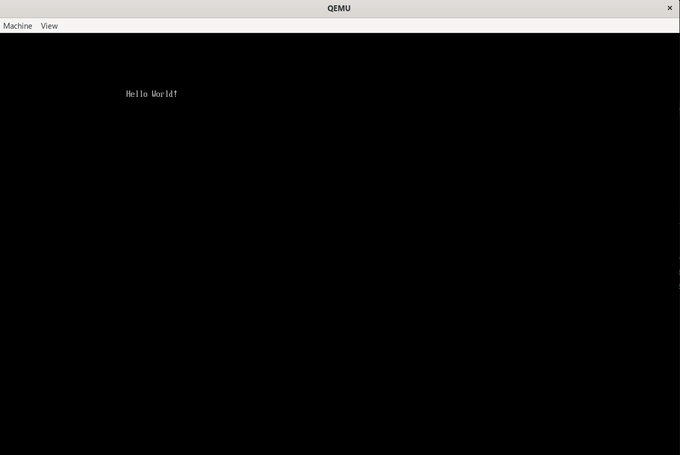

UEFI 应用：固件接口和 QEMU 上的 Hello World
最近学习了 OS 中的启动方式，BIOS 和 UEFI，然后发现现在主流的是 UEFI，于是写个文章记录一下
本文介绍一份最小的 UEFI 应用，在 QEMU 里清屏并打印 Hello World
环境是 WSL2，固件用 OVMF.fd，库用 gnu-efi
固件
固件 可以理解成计算机启动时 第一个加载的软件，负责硬件初始化和系统启动
许多硬件在内部的只读存储器（ROM）里预置了软件，这就是 固件
正确地调用固件提供的接口，就能在操作系统起来之前 直接操作硬件
BIOS 和 Legacy 启动
BIOS（基本输入输出系统） 是存在主板上的 固件，上电后负责硬件初始化和操作系统引导。主要做三件事：
- 硬件检测和初始化
- 系统配置和设置
- 引导操作系统
Legacy 启动 就是 BIOS 固件 初始化硬件设备 的那套 引导过程。机器上已经装好的设备，会在 POST（开机自检） 里被初始化
过程大概是：
flowchart TB
A[上电] --> B[POST 开机自检]
B --> C[初始化已安装设备]
C --> D[按启动顺序找磁盘]
D --> E["读 MBR 第一个扇区"]
E --> F[跳进引导加载器]
F --> G[加载操作系统]
BIOS 把 引导逻辑 塞在 固件 和 磁盘 开头 那 512 字节里，16 位实模式往上爬，后面的加载器、分区表都围着这套转
UEFI 启动
UEFI（统一可扩展固件接口） 是公开规范，定义操作系统和平台固件之间的 软件接口
UEFI 启动 是用 UEFI 固件启动操作系统
用这份固件加载并执行的程序，叫 UEFI 应用
和 BIOS 不同，引导数据放在 .efi 文件里，而不是写死在固件里
磁盘上有一块 EFI 分区（ESP），FAT 格式，专门存 .efi 和引导加载器。常见路径是 EFI/BOOT/BOOTX64.EFI
UEFI 启动 少了 BIOS 那套完整自检，硬件初始化 还在固件里做，但不是 POST 扫一遍设备再读 MBR 那种流程
过程大概是：
flowchart TB
A[上电] --> B[UEFI 固件初始化]
B --> C[找到 EFI 分区]
C --> D["加载 .efi"]
D --> E[进 UEFI 应用]
E --> F[Boot Services 还在]
F --> G[ExitBootServices]
G --> H[把控制权交给操作系统]
新主板里经常能看到 UEFI 启动模式。QEMU 本身不带这份固件，要先装 OVMF：
sudo apt install qemu-system-x86 ovmf
后面 qemu-system-x86_64 -bios /usr/share/ovmf/OVMF.fd ... 就是把这份 UEFI 固件喂给虚拟机
BIOS 和 UEFI 的区别
- 放哪： BIOS / Legacy 靠 MBR 和固件内部的引导代码，UEFI 靠 EFI 分区上的
.efi - 文件格式：
.efi本质是 PE/COFF，BIOS 引导扇区是裸机器码 - 自检： Legacy 在 POST 里把已安装设备初始化完，UEFI 弱化了这套自检过程
- 接口： BIOS 是中断调用（比如磁盘
INT 13h），UEFI 是 协议，一组函数指针 - 运行时： UEFI 应用跑在 Boot Services 还活着的阶段，能用内存分配、协议查找、Stall。操作系统接手前要
ExitBootServices，之后只剩 Runtime Services - 扩展： UEFI 应用和驱动都能按协议往上挂，BIOS 扩展靠 Option ROM，限制更多
所以总的来看，UEFI 确实是比 BIOS 更先进
协议
UEFI 功能拆成很多单元，每个单元 叫 协议（Protocol），定义成以 _PROTOCOL 结尾的结构体。里面是一组 函数指针，顺着这些指针就能调固件里 已经实现好的功能
入口不是 main，是 efi_main(ImageHandle, SystemTable)。ImageHandle 代表当前这个 .efi 镜像，SystemTable 是整张系统表
EFI_SYSTEM_TABLE 上最常用的几块：
ConIn：控制台输入，类型是文本输入协议ConOut：控制台输出，类型是EFI_SIMPLE_TEXT_OUTPUT_PROTOCOLBootServices：启动阶段服务，gnu-efi 里常写成BSRuntimeServices：操作系统起来之后还在的那一小撮，改时间、读变量之类
Hello World 只用 ConOut。ConOut 上常见的函数指针：
ClearScreen：清屏OutputString：打宽字符串，字面量要L"..."，换行写成\r\nSetCursorPosition：挪光标EnableCursor：显示或隐藏光标SetAttribute：改前景 / 背景色
调用这些函数指针时走 uefi_call_wrapper()。这是 gnu-efi 的宏，让函数在 不同编译环境 下调用约定还能对上。第二个参数是 后面跟着几个实参，再往后才是 This 和真正的参数：
uefi_call_wrapper(SystemTable->ConOut->ClearScreen, 1, SystemTable->ConOut);
uefi_call_wrapper(SystemTable->ConOut->OutputString, 2, SystemTable->ConOut, L"Hello World!\r\n");
ConOut 已经挂在 SystemTable 上，Hello World 直接用就行。别的协议不一定在这张表上，要拿句柄去问 Boot Services 的 HandleProtocol
我直接用 gnu-efi，这是一个用 C 写 UEFI 应用的开发库，能省去自己手写 EFI_SYSTEM_TABLE 这些结构体
Hello World
简述
环境：
- 这题我依然直接用 WSL 来做了，然后是 WSL2
- 虚拟机：
qemu-system-x86_64 - 启动方式：UEFI
- 指令集架构：x86
- 编译工具：mingw-w64
- UEFI 库：
gnu-efi - UEFI 固件：
OVMF.fd - 磁盘工具：
mtools
实现
#include <efi.h>
#include <efilib.h>
EFI_STATUS EFIAPI efi_main(EFI_HANDLE ImageHandle, EFI_SYSTEM_TABLE *SystemTable) {
//初始化 GNU-EFI
InitializeLib(ImageHandle, SystemTable);
//清屏
uefi_call_wrapper(SystemTable->ConOut->ClearScreen, 1, SystemTable->ConOut);
//输出
uefi_call_wrapper(SystemTable->ConOut->OutputString, 2, SystemTable->ConOut, L"Hello World!\r\n");
//让程序一直运行
while(1);
return EFI_SUCCESS;
}
InitializeLib 把 gnu-efi 的全局表（包括后面用的 BS）接上。清屏、打字都走 ConOut。最后空转，避免应用立刻退出、屏幕一闪而过
Makefile 里 make 编出 BOOTX64.EFI，make run 拉起 QEMU。编译选项是 freestanding：-fpic -ffreestanding -fshort-wchar -mno-red-zone，链上 crt0-efi 和 elf_x86_64_efi.lds，再用 objcopy --target=efi-app-x86_64 转成 EFI 应用
ARCH = x86_64
CC = gcc
LD = ld
OBJCOPY = objcopy
EFI_INCLUDE = /usr/include/efi
EFI_LIB = /usr/lib
EFI_CRT_OBJS = $(EFI_LIB)/crt0-efi-$(ARCH).o
EFI_LDS = $(EFI_LIB)/elf_$(ARCH)_efi.lds
CFLAGS = -I$(EFI_INCLUDE) \
-I$(EFI_INCLUDE)/$(ARCH) \
-I$(EFI_INCLUDE)/protocol \
-fpic \
-ffreestanding \
-fno-stack-protector \
-fno-stack-check \
-fshort-wchar \
-mno-red-zone \
-maccumulate-outgoing-args \
-Wall \
-Wextra
LDFLAGS = -shared \
-Bsymbolic \
-L$(EFI_LIB) \
-T$(EFI_LDS) \
$(EFI_CRT_OBJS)
LDLIBS = -lefi -lgnuefi
TARGET = hello
EFI_TARGET = BOOTX64.EFI
all: $(EFI_TARGET)
$(TARGET).o: $(TARGET).c
$(CC) $(CFLAGS) -c $< -o $@
$(TARGET).so: $(TARGET).o
$(LD) $(LDFLAGS) $< -o $@ $(LDLIBS)
$(EFI_TARGET): $(TARGET).so
$(OBJCOPY) -j .text \
-j .sdata \
-j .data \
-j .dynamic \
-j .dynsym \
-j .rel \
-j .rela \
-j .reloc \
--target=efi-app-$(ARCH) \
$< $@
clean:
rm -f $(TARGET).o $(TARGET).so $(EFI_TARGET)
run: $(EFI_TARGET)
@mkdir -p disk/EFI/BOOT
@cp $(EFI_TARGET) disk/EFI/BOOT/
qemu-system-x86_64 \
-bios /usr/share/ovmf/OVMF.fd \
-drive file=fat:rw:disk,format=raw \
-net none
QEMU 要启动 BOOTX64.EFI，得把它放到 FAT 分区里。QEMU 刚好能把一个目录挂成虚拟 FAT 驱动器，我这边目录叫 disk
mkdir -p disk/EFI/BOOT
cp BOOTX64.EFI disk/EFI/BOOT/
qemu-system-x86_64 -bios /usr/share/ovmf/OVMF.fd -drive file=fat:rw:disk,format=raw -net none
-net none 关掉网卡，少一些无关输出。make run 会先拷文件再启动


说些什么吧！